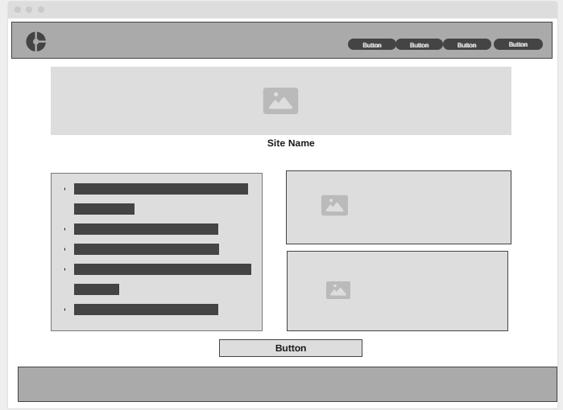

Site Name
The site name is Ghanaian Street Food Guide. This name was selected because it clearly represents the purpose of the website – to showcase and guide people through the various street foods found in Ghana.
Site Purpose
The site serves as a comprehensive guide to the street food culture in Ghana, offering information on popular dishes, vendor locations, cultural history, and tips for food explorers. It also helps increase visibility for local street food vendors and encourages food tourism in Ghana.
Scenarios
- What are the best street food spots to visit in Accra?
- Where can I find Kelewele and how is it made?
Color Schema
The following color scheme will be used on the website:
- #FF5722 (Vibrant Orange) - Used for headings, buttons, and navigation background.
- #F5F5F5 (Light Gray) - Used for the background color of the body content to ensure readability.
Typography
For the site’s typography, I will use the following fonts:
- Primary Font: Roboto - This will be used for all body text to ensure clarity and readability.
- Secondary Font: Open Sans - This will be used for headings to create a clear distinction between content types.
Wireframe
Here’s a basic wireframe for both mobile and desktop views:
Desktop View
